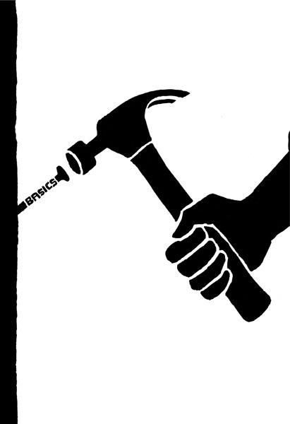

{% include JB/setup %}
{% raw %}
<div>

<h2 id="filepos83695" class="calibre19"><span class="calibre2"><a class="calibre13"></a><strong class="calibre14">Start at the epicenter</strong></span></h2><div class="calibre4"></div>
<p class="calibre7">When you start anything new, there are forces pulling you in a variety of directions. There's the stuff you <em class="italic1">could</em> do, the stuff you <em class="italic1">want</em> to do, and the stuff you <em class="italic1">have</em> to do. The stuff you <em class="italic1">have</em> to do is where you should begin. Start at the epicenter.</p>
<p class="calibre17">For example, if you're opening a hot dog stand, you could worry about the condiments, the cart, the name, the decoration. But the first thing you should worry about is the hot dog. The hot dogs are the epicenter. Everything else is secondary.</p>
<p class="calibre17">The way to find the epicenter is to ask yourself this question: "If I took this away, would what I'm selling still exist?" A hot dog stand isn't a hot dog stand without the hot dogs. You can take away the onions, the relish, the mustard, etc. Some people may not like your toppings-less dogs, but you'd still have a hot dog stand. But you simply cannot have a hot dog stand without any hot dogs.</p>
<p class="calibre17">So figure out your epicenter. Which part of your equation can't be removed? If you can continue to get by without this thing or that thing, then those things aren't the epicenter. When you find it, you'll know. Then focus all your energy on making it the best it can be. Everything else you do depends on that foundation.</p>
<p class="calibre3"><a class="calibre16"></a></p><div class="calibre4"></div>
</div>

{% endraw %}

